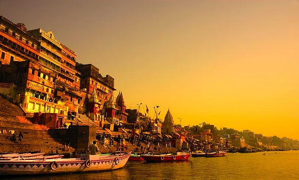

Kashi Vishwanath Temple, Varanasi
Featuring next in the list of top 10 most famous Lord Shiva temples in India is the Kashi Vishwanath Temple in Varanasi, one of the oldest cities in the world. It is one of the 12 holi jyotirlingas of Lord Shiva and a visit to this temple is believed to bring salvation for the worshippers.